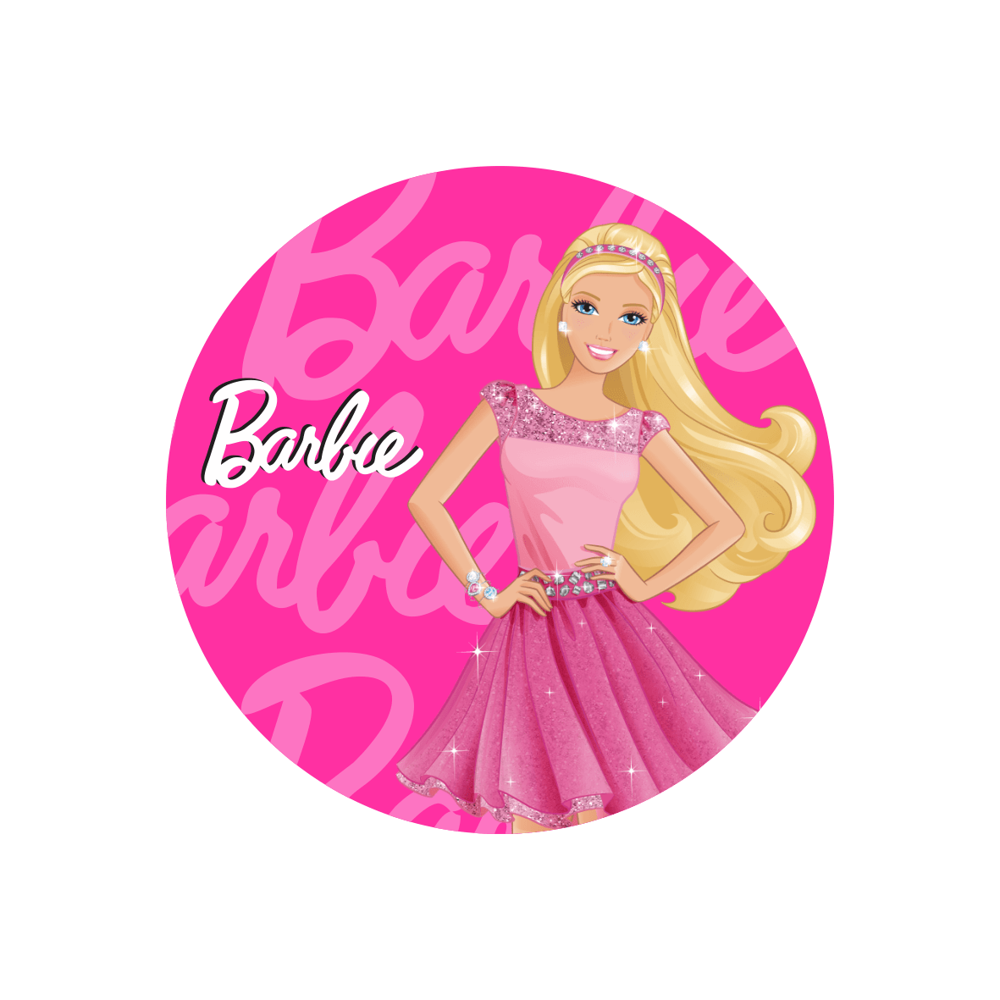
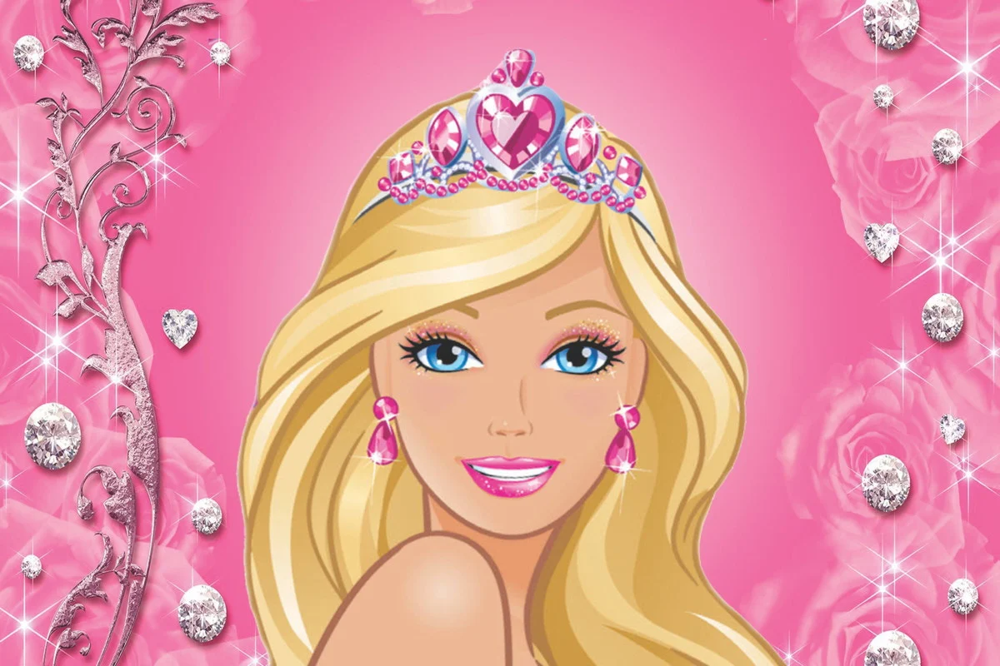

Barbie é uma boneca e personagem fictício fabricada pela empresa estadunidense de brinquedos Mattel, Inc. e lançada em 9 de março de 1959. A empresária Ruth Handler é creditada com a criadora da boneca usando uma boneca alemã chamada Bild Lilli como sua inspir ação.Barbie é a figura principal de uma marca de bonecas e acessórios da Mattel, incluindo outros membros da família e bonecas colecionáveis. A Barbie tem sido uma parte importante do mercado de bonecas por mais de seis décadas e tem sido objeto de inúmeras controvérsias e ações judiciais, muitas vezes envolvendo paródias da boneca e seu estilo de vida. A Mattel vendeu mais de um bilhão de bonecas Barbie, tornando-se a maior e mais lucrativa linha da empresa

O nome completo da Barbie é Barbara Millicent Roberts . Em uma série de romances publicados pela Random House na década de 1960, os nomes de seus pais são George e Margaret Roberts, da cidade fictícia de Willows, Wisconsin. Nos romances da Random House, Barbie frequentou a Willows High School; enquanto nos livros Generation Girl, publicados pela Golden Books em 1999, ela frequentou a fictícia Manhattan International High School na cidade de Nova York (baseada na Stuyvesant High School da vida real) Ela tem um relacionamento romântico intermitente com seu então namorado Ken (nome completo "Kenneth Sean Carson"), que apareceu pela primeira vez em 1961. Um comunicado de imprensa da Mattel em fevereiro de 2004 anunciou que Barbie e Ken haviam decidido se separar,mas em fevereiro de 2006, eles esperavam reacender seu relacionamento depois que Ken passou por uma repaginação. Em 2011, a Mattel lançou uma campanha para Ken reconquistar a afeição de Barbie. A dupla se reuniu oficialmente no Dia dos Namorados de 2011. A Mattel criou uma série de companheiros e parentes para a Barbie. Ela tem três irmãs mais novas: Skipper, Stacie e Chelsea (chamada Kelly até 2011) . Suas irmãs co-estrelaram em muitas entradas da série de filmes Barbie, começando com Barbie & Her Sisters in A Pony Tale de 2013. Membros 'aposentados' da família de Barbie incluíam Todd (irmão gêmeo de Stacie), Krissy (uma irmãzinha) e Francie (prima). Os amigos de Barbie incluem a hispânica Teresa, Midge, o afro-americano Christie e Steven (namorado de Christie). Barbie também foi amiga de Blaine, um surfista australiano, durante sua separação de Ken em 2004. Barbie teve mais de 40 animais de estimação, incluindo cães e gatos, cavalos, um panda, um filhote de leão e uma zebra. Ela possuiu uma ampla gama de veículos, incluindo conversíveis cor-de-rosa Beetle e Corvette, trailers e jipes. Ela também possui licença de piloto e opera aviões comerciais, além de servir como comissária de bordo. As profissões da Barbie são projetadas para mostrar que as mulheres podem assumir uma variedade de papéis na vida e a boneca foi vendida com uma ampla gama de títulos, incluindo Barbie Astronauta (1965), Barbie Doutora (1988) e Barbie Piloto (1998).